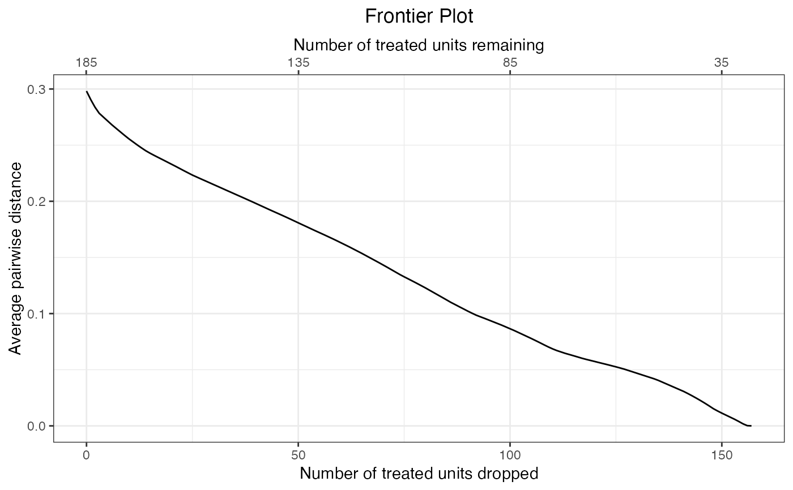

matchit object a a point along the frontierfrontier_to_matchit.RdgenerateDataset() generates a matchit object at a given point along the frontier identified either by the number of units remaining or the number of units dropped at that point on the frontier. All MatchIt functions that work with matchit objects can be used on the output, such as summary.matchit() for checking balance.
frontier_to_matchit(frontier.object, N, Ndrop)a matchFrontier object; the output of a call to makeFrontier().
the number of units remaining in the sample at the desired point on the frontier. Exactly one of N or Ndrop must be specified.
the number of units dropped in the sample at the desired point on the frontier. Exactly one of N or Ndrop must be specified.
The argument to N or Ndrop depend on the quantity of interest (QOI) supplied to the original call to makeFrontier(). When QOI was "SATE" or "FSATE", they correspond to the total number of units remaining or dropped. When QOI was "SATT", they correspond to the number of control units remaining or dropped (since no treated units are dropped). When QOI was "FSATT", they correspond to the number of treated units remaining or dropped. See also the n component of the matchFrontier object at makeFrontier(). When using summary.matchFrontier(), the carrot printed underneath the summary table indicates which group N and Ndrop refer to.
A matchit object. See matchit() for further details. The following components are included in the output:
a matrix containing information on which units are matched to which. Only present when using a pair distance=based frontier.
the resulting matching weights. Dropped units will have a weight of 0.
a data frame of the covariates used in matching.
the makeFrontier() call.
information on the matching method and distance measures used, to be processed by print.matchit().
the target estimand. Will be "ATE" when QOI is "SATE" or "FSATE", and will be "ATT" when QOI is "SATT" or "FSATT".
a formula relating the treatment to the matching covariates.
a vector of treatment status converted to zeros (0) and ones (1) if not already in that format.
a matrix of the sample sizes of the treated and control groups before and after matching.
data("lalonde", package = "MatchIt")
#Pair distance frontier for FSATT
f1 <- makeFrontier(treat ~ age + educ + married + re74,
data = lalonde, QOI = "FSATT",
metric = "dist", verbose = FALSE)
plot(f1)

#Convert to matchit object after dropping 120 treated units
m1 <- frontier_to_matchit(f1, Ndrop = 120)
#Usual MatchIt functions work
m1
#> A matchit object
#> - method: 1:1 matching frontier (minimizing the average pairwise distance)
#> - number of obs.: 614 (original), 99 (matched)
#> - target estimand: ATT
#> - covariates: age, educ, married, re74
summary(m1)
#>
#> Call:
#> makeFrontier(formula = treat ~ age + educ + married + re74, data = lalonde,
#> QOI = "FSATT", metric = "dist", verbose = FALSE)
#>
#> Summary of Balance for All Data:
#> Means Treated Means Control Std. Mean Diff. Var. Ratio eCDF Mean
#> age 25.8162 28.0303 -0.3094 0.4400 0.0813
#> educ 10.3459 10.2354 0.0550 0.4959 0.0347
#> married 0.1892 0.5128 -0.8263 . 0.3236
#> re74 2095.5737 5619.2365 -0.7211 0.5181 0.2248
#> eCDF Max
#> age 0.1577
#> educ 0.1114
#> married 0.3236
#> re74 0.4470
#>
#>
#> Summary of Balance for Matched Data:
#> Means Treated Means Control Std. Mean Diff. Var. Ratio eCDF Mean
#> age 21.5846 21.4615 0.0172 0.9488 0.0092
#> educ 10.4308 10.4308 0.0000 0.9683 0.0000
#> married 0.1231 0.1231 0.0000 . 0.0000
#> re74 256.9393 265.0737 -0.0017 0.9027 0.0071
#> eCDF Max Std. Pair Dist.
#> age 0.0769 0.0602
#> educ 0.0000 0.0000
#> married 0.0000 0.0000
#> re74 0.0923 0.0135
#>
#> Sample Sizes:
#> Control Treated
#> All 429. 185
#> Matched (ESS) 21.45 65
#> Matched 34. 65
#> Unmatched 395. 120
#> Discarded 0. 0
#>